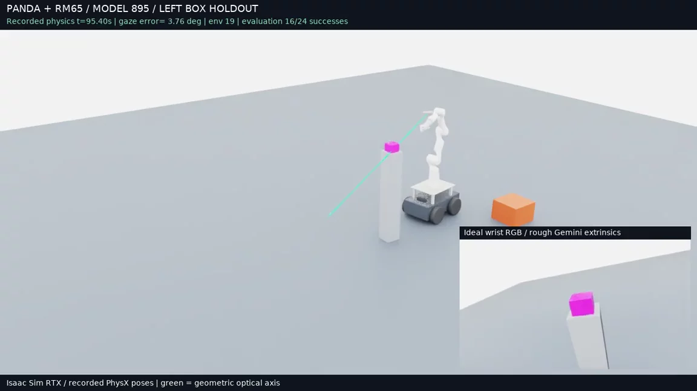

移动机械臂全身协同绕障与持续观测
移动机械臂绕过障碍时，如何让目标持续留在腕相机视野中？我在 Isaac Lab 中训练联合 PPO 策略，同时输出底盘线速度、角速度与六维末端增量。
- 仿真侧用 8,192 个并行环境训练错列箱课程，并在 60 组配对留出回合中比较基线和候选策略。
- 真机侧搭建 20 Hz 车臂控制循环，并在无遮挡场景测试联合 PPO。R59 使用实测箱位引导底盘，腕相机反馈闭环调整 J1。

R59 · 单次真机记录
- 编码器行程
- 4.15 m
- 行进或转向时的腕图检出
- 6,803 / 6,803
- 腕部离轴角中位数
- 8.54°
录像中车臂绕过双箱。末段触发前向深度安全检查，车臂停止，控制日志将该回合记为未通过。